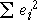

Problems with residuals as indicators of outliers
Unfortunately, data points that do not fit the pattern displayed in most of the data do not always have large residuals (or standardised residuals). This is because all data points pull the least squares line towards themselves, since the line is positioned to minimise the sum of squares of the residuals
minimise 
Large residuals pull very strongly on the line since they are squared in the least squares criterion. As a result,
Unusual points strongly pull the least squares line towards themselves, making their residuals smaller than you might otherwise expect.
This effect is strongest when the x-value of a point is very large or small. These points are said to have more leverage on the position of the line.
If an outlier corresponds to a high-leverage point, its residual may therefore still be small.
You can experiment with this effect in the following applet.
Illustration
The scatterplot below shows a data set and the corresponding residuals.
The cross on the far right can be dragged with the mouse. Initially, the diagram shows what we would ideally have hoped to see in the residuals — the other points are close to a straight line, so if the final cross is dragged away from this line, we would have hoped that it would result in a large residual.
This is not what actually happens. Choose What you actually get... from the pop-up menu at the top and drag the point again. The least squares line is pulled towards the point, so when it is dragged away from the line followed by the other points, its residual is smaller than might be expected and the residuals for the other points are larger.
This is especially evident when the point being dragged has an x-value of around 4 — i.e. when it is a high leverage point. Drag it down to a y-value of about 40 and observe that its residual is no more extreme than those of the other points.
Do not rely on an extreme residual to tell you whether a high-leverage point is an outlier.